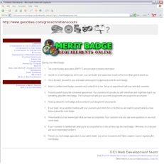
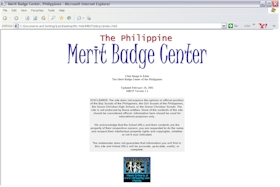
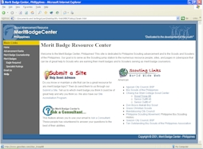
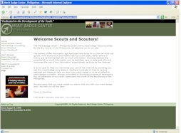
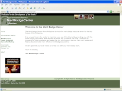
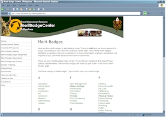
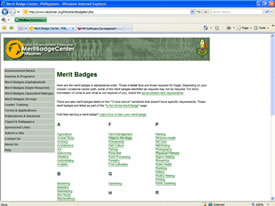

Stages: The Story of the Merit Badge Center
The Merit Badge Center continues to be the leading Scouting website in the Philippines. Its mission: "To provide Scouts and Scouters a means to maximize their use of the Internet by providing resources and maintaining a collection of searched websites that can help in the Scout Advancement process."
It is important that we remember our humble
beginnings in order for us to reach the pinnacle of our objectives.
As such, I maintain this page for my own purposes to remember
what it was all about.
In the Beginning... Beta Version

It all began as a project at the De La Salle
University-Manila. It was a simple idea
then--create online copies of all the Merit Badge requirements. The project was completed on August
4, 1999 and became part of the Grace
Christian High School Scout Center's website as a tool specific
for the institution. No resource links were available, but the
names of institution-specific Merit Badge counselor were listed
with the Merit Badges. This website was never intended to serve
Scouts outside the school.
Version One: Big Bang Flop

On November 18, 2000, I left the Philippines to start a new life in California. It was an eventful Saturday.
On November 21, 2000, the Merit Badge site on the Grace Christian High School Scout Center site was removed and the Philippine Merit Badge Center was launched. The new site was envisioned to provide a useful tool to all Scouts in the Philippines using Michael
Kauffmann's Merit
Badge Research Center (MBRC) as a guide.
Version One was a host migration. The encoding structure of the site stayed the same with the exception of having "Resource Links" or a collection of links on each Merit Badge to websites that can help in earning the requirements. The original web design was never intended for new features being introduced and it suffered numerous problems. One such problem is that each Merit Badge was encoded as individual HTML file. This meant that Resource Links are added onto Merit Badges individually. Maintenance was a nightmare--changes performed on individual file and uploaded files individually as well. It simply took too long.
Inspite of the problem and inherent difficulty of maintenance, Version One also included the Senior Girl Scout Eight-Point Challenge Badges. I eventually removed that portion of the website since it was not receiving enough traffic to justify the already heavy workload.
Version One, being built on top of the Beta Version, suffered from several poor encoding that was mostly done on Microsoft Notepad. It was the new releases of Netscape Navigator and Internet Explorer that forced me to redesign the website from scratch. I honestly debated for sometime whether it is worth it to continue this project. Even today I consider it the right decision to continue on.
Version One was short-lived, had not more than 50 Resource Links, and certified nightmare. In April 2001 work on the new version started from the ground up.
Version Two: Re-Birth

On May 30, 2001 Version Two of the Merit Badge Center was completed. We finally adopted the name "Merit Badge Center, Philippines" and introduced our logo. My limited resources at the time made it the right choice to have free web hosting. Version two was driven by JavaScript.
On this version all Merit Badge requirements are listed within a JavaScript file. A single HTML file refers to the JavaScript and displays the requested requirement. Resource Links were contained in its own JavaScript file and also called into the same HTML file. On this new version, changes to any Merit Badges involves editing a maximum of 3 files. The ease of maintenance made it possible for the website to include more Resource Links that I cannot add during Version One. Resource Links increased from 50 to 200 almost overnight. Cross-browser compatibility issue were also addressed in this version.
Version Two saw itself compete in the 4th Philippine Web Awards and named one of the 10 semi-finalist for the Education and Resource Category. This version also introduced the not so popular "Ask a Consultant" that allows Scouts to get in touch with pre-selected Merit Badge Cousnelors online.
The sudden surge in Resource Links allowed the website to outgrew the single JavaScript file for Resource Links. The initial design of Version Two required webusers to download the entire JavaScript file with the pool of all Merit Badge requirements and resource links. This resulted to a very slow initial download causing people to think the website has stopped responding. Although once the initial download was completed, the website responded fast since the JavaScript is now locally stored. The increasing amount of Resource Links became a huge issue and it was split into four separate JavaScript file each for requirements and Resource Links (total of eight). It split the Merit Badges from A-E, F-N, and O-Z.
Version Two and a Half: The Face Lift Version

As the title suggests, this was a mid-way version that involved an image change. The website continues to work on the same JavaScript delivery system. The "face lift" took place on December 5, 2001 following the conclusion of the 4th Philippine Web Awards. The logo was modified, but it was not as appealing as the original. We received several comments from users about the logo as well.
At this point the four separate JavaScript file that was intended to relieve the download congestion have each grown back to the size of the original file they replaced. The initial thought was to split the JavaScript further, but that would mean more files to maintain. A lasting solution to the issue was necessary at this junction. After looking into several free hosting solution a migration from Geocities webhosting to Tripod webhosting was decided. Tripod offered CGI and Perl scripting that can shift the burden of processing to the server-side. Plans for developing a CGI-based delivery engine was well on its way.
Version Three: Welcome CGI and PHP
On February 16, 2002, the new CGI system was deployed on Tripod. The facelift design of Version Two was retained and much of the Resource Links and pages had to be modified to use CGI instead of JavaScript. The CGI worked seemlessly.
On May 10, 2003, the Merit Badge Center was one of Yahoo! Asia's weekly pick commenting that the site "showcases a collection of Merit Badges for the Boy Scouts of the Philippines with downloadable Scout Handbook and requirements".
Version 3 was up for almost two years until my personal resource permitted me to go onboard paid webhosting. Since the paid host supports PHP and MySQL, another major re-design was in order.
Version Four: A Change for the Better

Version Four shared the external design of Version Three but using the original logo from Version Two. The permanent migration to new host that supported PHP but not CGI prompted a re-design. During the design phase the old JavaScript delivery engine was temporarily used (since CGI was not supported) and slowly each portion of the website was encoded into PHP. The website was fully migrated on September 30, 2003.
The "Ask a Consultant" feature was removed upon migration. At this point the Resource Links database had more than 600 third-party websites and pages. The surge of Resource Link suggestions via e-mail and the potential threat of viruses and malware made me create the submit-a-site form for the website. It is a web-based system to maintain and manage submissions.
A Change of Image

On April 20, 2005 a new design was created to give the website a fresh new look. The internal working stayed the same. The "Publications" section was added which included works of Robert Baden-Powell. Merit Badge worksheets were also added to help Scouts with their advancement. In addition, we revive the "Philippine
Scouting Movement" website by the Grace Christian Service Scouts and incorporated
it into the Merit Badge Center as a resource for Philippine Scouting
history. We also added an unofficial Boy Scouts
of the Philippines set of pages in response to the sudden absence of its online
presence.
In October 2005, the Merit Badge Center participated
in the 8th Philippine Web Awards and again made it only as a
semi-finalist for the Organizations category. During this month,
the Merit Badge Center also introduced the Merit Badge Center
issued certificates to recognize the contribution of individuals
and groups to the website as well as commendations to individuals
or groups that has extraordinarily exemplified values the Scouting
Movement holds ideal.
In 2006 the Merit Badge Center participated in multiple award search: Webby Awards, International Davey Awards, the W3 Awards, and the Philippine Web Awards, where the site received recognition of being one of the finalist of the Philippine Web Awards and a Silver W3 Award from the International Academy of the Visual Arts.
In June 2006, we launched a Discussion Network. Acceptance was very slow with only a handful of registrants and no real active users. After seven months of operation, the discussion board proved to be more burden that its worth. Time was spent more on keeping abusive individual(s) in check. It was finally removed in February 2007.
Another Change of Image

On March 25, 2007, a new web design was created to give the site a new look and feel. Minor updates were made to the PHP codes, but relatively it remained the same.
As early as February 3, 2005 the Merit Badge Center acquired the domain scoutcenter.org, with the purpose of segregating various non-advancement related information from the Merit Badge Center. It was not until August 17, 2007 when Syd Castillo, Director of Youth Program and IT for WOSM's Asia-Pacific Region re-opened the topic of segregating the information that we switched to full gear. On February 8, 2008, the segregation was completed.
New Eagle Scout Design
On March 3, 2011 the Merit Badge Center started a project to update the look of the Eagle Scout youth patch of the Boy Scouts of the Philippines. It was the goal to add prestiege to the badge and reflect the power and majesty of the Philippine Eagle, one of the most powerful raptors in the world. Joel Francisco Lee provided the initial graphic design for the Eagle then the Merit Badge Center commissioned Stadri Emblems to finalize the design based on additional adjustments and create the prototype patch. On April 20, 2011, a copyright registration certificate was received from the United States Copyright Office (VAu 1-068-437) with rights and permissions to manage was given to the Merit Badge Center, Philippines.
On June 4, 2011 the Eagle Scouts Organization of the Philippines adopted a new logo incorporating the new Eagle Scout design. On August 20, 2011 the National Executive Board of the Boy Scouts of the Philippines unanimously approved the new Eagle Scout design as the new official Eagle Scout badge. The design was presented for approval by the Insignia and Uniform Committee Chairman and Philippine National Artist Mr. Nemi Miranda.
Mobile Site
On September 30, 2012 the Merit Badge Center launched a mobile version of its website. The mobile platform is accessible through the iPhone and other smart phones.
Miscellaneous
On July 7, 2011, the Merit Badge Center started a Facebook page. On October 30, 2011, the Merit Badge Center started advertising on Facebook.
|